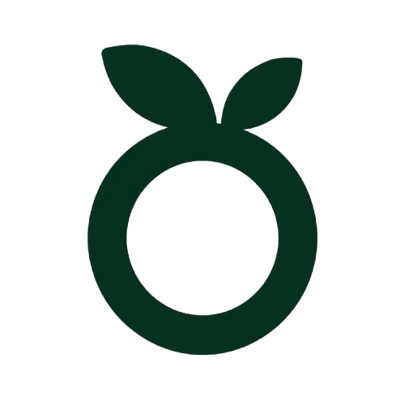

Crunching Nature's Goodness
At Orinic Foods, we believe healthy snacks should never be boring. Through advanced freeze-drying technology, we preserve the natural goodness of fruits while creating a light, crunchy, and enjoyable snacking experience.

Orinic FoodsFreeze-Dried Snacks Made From Real Fruits & Ingredients
Unique Products
Real Ingredients
Preservatives Added
Crunch Factor
Explore our range of freeze-dried snacks made from real fruits and ingredients.
Loading products...
Our freeze-drying process helps preserve the natural taste, texture and goodness of ingredients.
Locks in flavour, crunch and nutrients.
Made from real fruits and carefully selected ingredients.
Enjoy clean snacking without unnecessary additives.
Light, crispy and satisfying in every bite.
A simple process that preserves taste, texture and natural goodness.
We start with carefully selected fruits and ingredients.
Advanced freeze-drying helps retain flavour and crunch.
Light, crispy snacks ready to enjoy anytime.
At Orinic Foods, we believe healthy snacks should never be boring. Through advanced freeze-drying technology, we preserve the natural goodness of fruits while creating a light, crunchy, and enjoyable snacking experience.
Orinic Foods brings you healthy freeze-dried snacks made from real fruits and ingredients. Our goal is to deliver crunchy, natural, and nutritious snacking experiences.
WhatsApp: +91 93565 13458
Email: wagheladaksh878@gmail.com